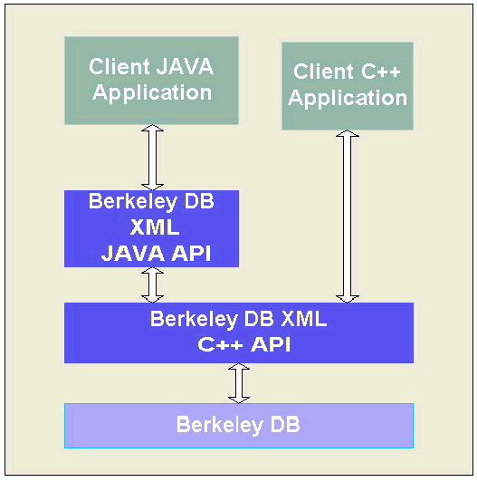

- Berkeley DB Reference Guide:
- Berkeley DB XML


|
|
Berkeley DB XML is implemented as C++ library on top of Berkeley DB. Berkeley DB XML is distributed as a shared library that is embedded into the client application. The Berkeley DB XML library exposes API's that enable C++ and Java applications to interact with the XML data containers. Figure 1 illustrates the Berkeley DB XML system architecture.

Berkeley DB XML uses Berkeley DB for data storage and transaction management. Client applications can also store data directly to a Berkeley DB database. Although Berkeley DB XML is implemented as a layer on top of Berkeley DB, some understanding of the underlying Berkeley DB API is required, as some Berkeley DB XML API methods accept Berkeley DB object handles as parameters.
The Berkeley DB XML library consists of three main components: a Document Storage Manager, an XML Indexer, and a Query Processing Engine.
Within Berkeley DB XML, documents are stored in containers. Each container has a name, document store, data dictionary, and sets of indices and system-maintained statistics. The client application can operate on multiple containers concurrently, and controls the placement of documents within containers. The client application can also store data to Berkeley DB databases. A client application can perform the following actions against a container:
| Action |
|---|
| Declare an index against the container. |
| Open the container for use within the application. |
| Insert a document into the container. |
| Retrieve a document from the container. |
| Update a document in the container. |
| Query the container using an XPath expression. |
| Delete a document from the container. |
| Close the container. |
| Rename the container. |
| Delete the container. |
| Dump the container to a text file. |
| Load the container from a text file that was generated by a container dump. |
| Verify that the container is internally consistent. |
The following code example demonstrates how to create a container, insert a document into the container, retrieve the document, and display the document contents. Note that exception handling has been removed for clarity.
void example()
{
// Create and open a container called "test"
XmlContainer container(0,"test.dbxml");
container.open(0,DB_CREATE);
XmlDocument document;
// Create an XML document and insert into the container
std::string content("<book><title>Databases</title></book>");
document.setContent(content);
u_int32_t id= container.putDocument(0,document);
// Retrieve the document and display the contents.
document= container.getDocument(0,id);
std::string s;
std::cout << id << " = " << document.getContentAsString(s) << "\n";
container.close();
}
|
|
Copyright (c) 1996-2003 Sleepycat Software, Inc. - All rights reserved.